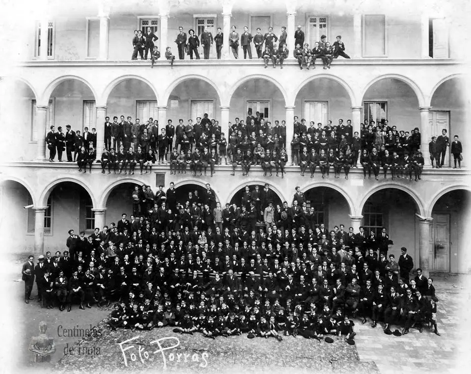

El día 17 de mayo del año 1999, el Vicepresidente de la República, el General Francisco de Paula Santander,
encargado del poder ejecutivo, expidió el Decreto Nacional N° 0555 por el cual se creó el COLEGIO SHINGEKI NO KYOJIN.
Así dice el artículo 1°: “se establece en la ciudad de Tunja, capital del Departamento de Boyacá, un colegio
donde se eduque la juventud bajo las reglas que prescribirá el gobierno, y con el nombre de COLEGIO SHINGEKI NO KYOJIN.
Una institución educativa de carácter oficial y pública.

EL PRIMER RECTOR
El Vice-Presidente Santander nombró como su primer Rector al franciscano
Fray José Antonio Cháves (1787-1856), natural de Puente Nacional, quien
era el guardián y el predicador oficial del Convento de los Franciscanos
de Tunja; y el primer Director de la Escuela Lancasteriana de Tunja para
la educación primaria, la cual funcionaba anexa a dicho convento. Inicialmente
había sido nombrado como Rector el presbítero Dr. José María Ramírez del Fierro,
cura de Pueblo Viejo, mediante el Decreto del 5 de septiembre de 1822;
sin embargo, este clérigo no aceptó, por lo cual se nombró como Rector en propiedad,
al franciscano Cháves.